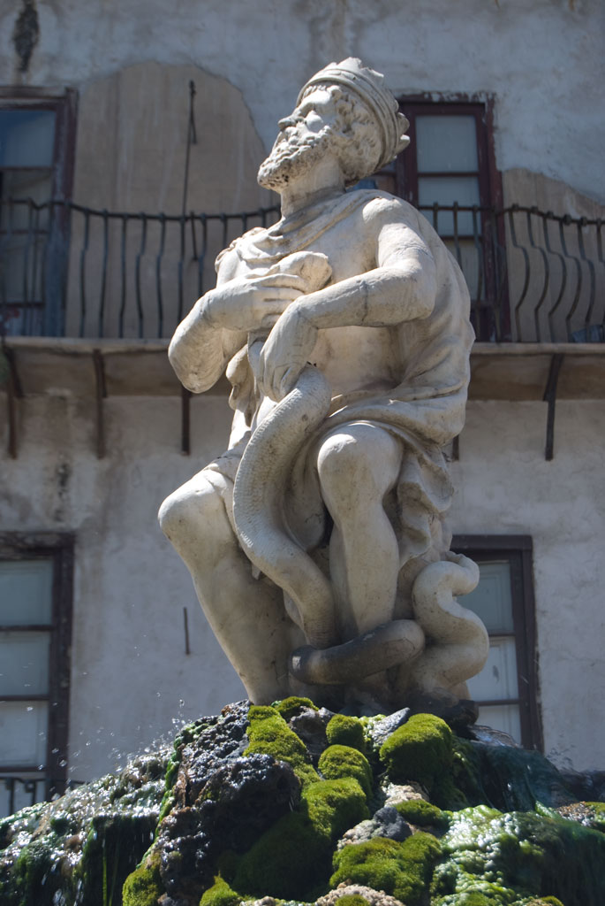

Piazza Rivoluzione, Genio
Ritrova nello spazio pubblico una forma o un colore del tuo motivo iniziale.
Controlla costo, prenotazione, apertura e accessibilità con il gestore. / Check price, booking, opening and accessibility with the operator.

Ritrova nello spazio pubblico una forma o un colore del tuo motivo iniziale.
Controlla costo, prenotazione, apertura e accessibilità con il gestore. / Check price, booking, opening and accessibility with the operator.